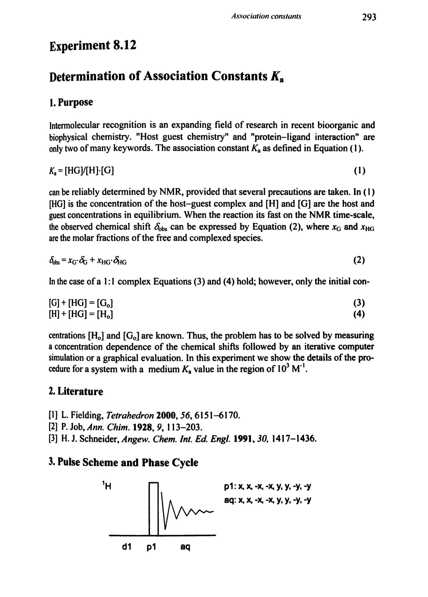
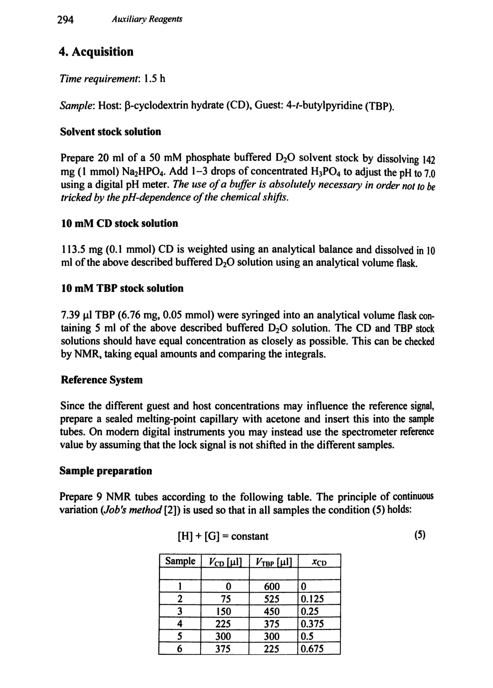
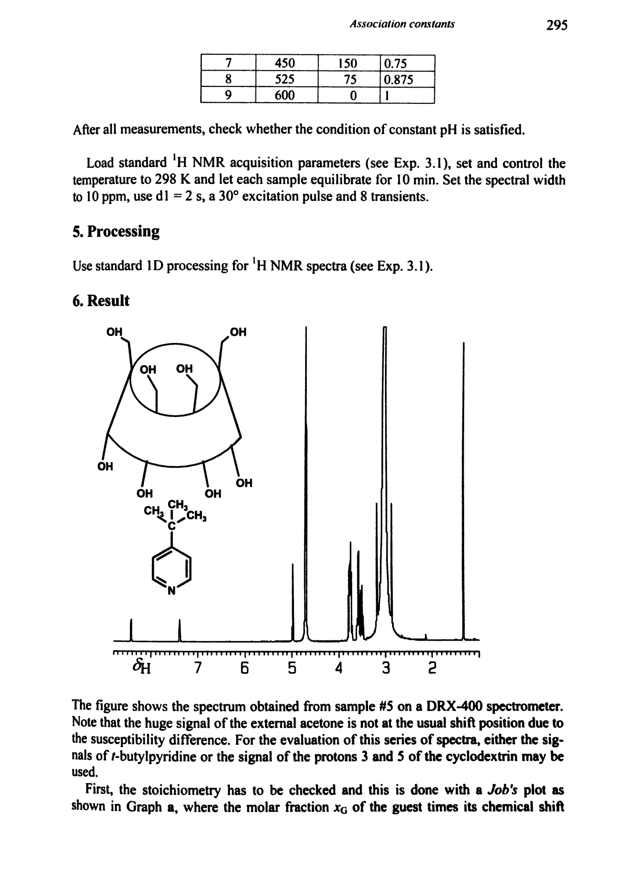
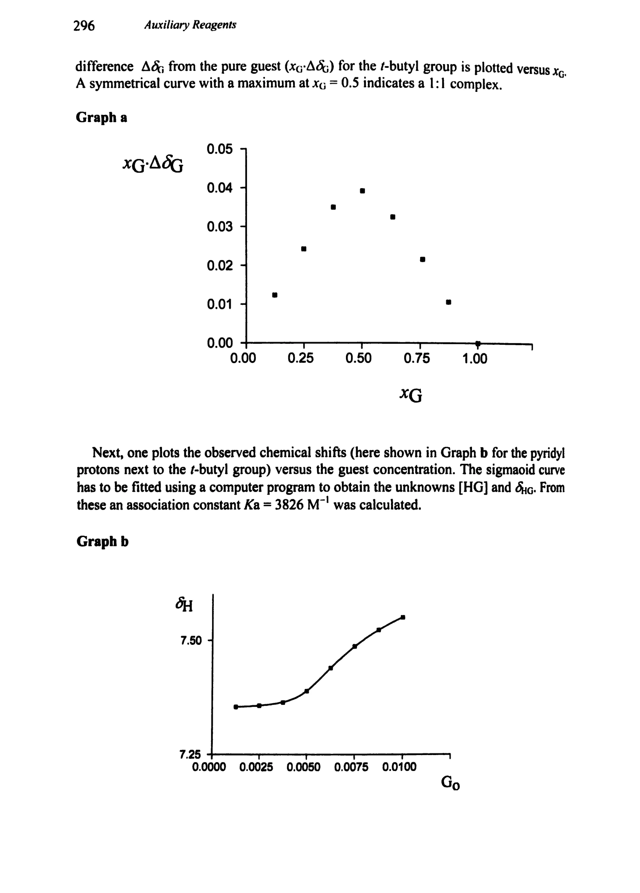
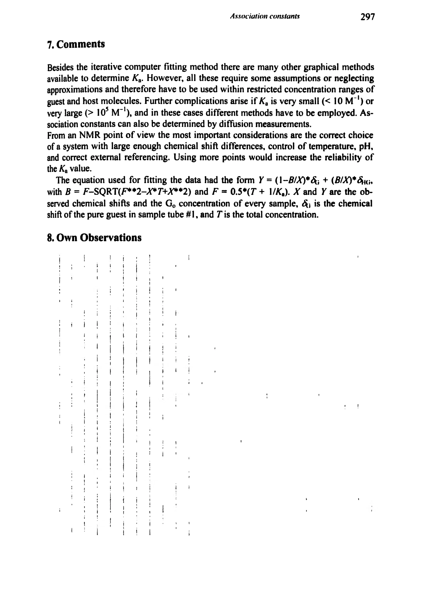

Experiment 8.12
Determination of Association Constants Kₐ
缔合常数 Kₐ 的测定
PDF 308–312 · 原书 293–297 · Auxiliary Reagents, Quantitative Determinations, and Reaction Mechanisms





核磁共振实验方法、脉冲序列与谱图实践
Experiment 8.12
缔合常数 Kₐ 的测定
PDF 308–312 · 原书 293–297 · Auxiliary Reagents, Quantitative Determinations, and Reaction Mechanisms




